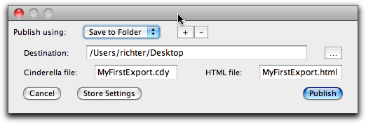

Creating Interactive Webpages
An exciting feature of Cinderella is its ability to create interactive webpages. You can publish any construction, even those using several views, within seconds, and without further knowledge about HTML.
This chapter explains the three scenarios for export: Plain examples, animations and construction exercises. You also find detailed information on the exported HTML code and instructions for post-processing of the web pages, e.g. adding explanatory text.
Glossary
If you are familiar with the World Wide Web and its technical background or if you do not want to bother with technicalities right now you can safely skip this section. As an aid for the further description we want to explain a few of the terms used below.
HTML is the page description language (or format) for web pages. It can be created and edited with any plain text editor, but it is much more convenient to use a special HTML editor. You can view the HTML code of a web page with the "view source" option in your web browser.
The HTML code mainly consist of the text which will be shown, enhanced by tags which describe the appearance and structure of this text. Here is an example:
⟨p⟩This is a paragraph containing some ⟨b⟩bold text⟨/b⟩ and some ⟨i⟩italics text⟨/i⟩.⟨/p⟩ ⟨p⟩This picture ⟨img src="pappos.gif"⟩ was produced with ⟨a href="http://www.cinderella.de"⟩Cinderella⟨/a⟩!⟨/p⟩
This fragment describes two paragraphs marked by
...
. The first paragraph contains two regions which should be typeset with special fonts, the first one, marked by ..., in bold, the second one in italics. You might recognize the easy structure of HTML, most of the elements are marked with opening (The second paragraph in the example shows how to include an image using the
Hyperlinks are usually given by an URL, an uniform resource locator. These describe resources by the protocols which give access to them. For the WWW most communication is done with the Hypertext Transfer Protocol, short for http. This explains the http:-part of the WWW addresses, which can be left out since most browsers assume it as a default. Other examples are ftp, the File Transfer Protocol, or the prefix file: which describes files that reside locally on your harddisk.
A special tag is reserved for Java integration into web pages. Whenever a Java compatible browser encounters an applet tag it tries to load the java program referenced by the code option and runs it inside a rectangle on the web page. The size of the rectangle is given by the width and height options. These programs are called Applets, as opposed to standalone applications. The diminutive is a little misleading, since applets can be as powerful as full applications.
The applet tag can also contain an archive option which describes the location of the java code. For Cinderella we provide an archive called cindyrun.jar which contains all the code needed for showing and manipulating constructions. This is an example of how the applet tag produced by Cinderella's web export functions could look like:
⟨applet code = "de.cinderella.CindyApplet"
archive = "cindyrun.jar"
width = 435
height = 231⟩
⟨param...
⟨/applet⟩
You find many tags which pass additional parameters like the filename of the construction to the applet. Never change or delete these parameters without exactly knowing what they mean.
Exporting Plain Examples
This is the easiest way to create a webpage with Cinderella. Whenever you have created a configuration you can use the export button
 to create an interactive webpage showing this construction in exactly the views that you are currently using. Each view will be a separate applet, and these applets communicate using a kernel ID which you find as a parameter of the applet.
to create an interactive webpage showing this construction in exactly the views that you are currently using. Each view will be a separate applet, and these applets communicate using a kernel ID which you find as a parameter of the applet.The construction itself is not saved in the HTML code, but in a separate file with the extension ".cdy". Whenever you create a web page you are prompted to save your file, if you have not done so before. The applet expects the file in the same directory as the html file of the web page. All this is automized by the Export dialog that pops up when you press the export button.
 |
| Export dialog |
This dialog window asks for file names for the Cinderella file and the corresponding HTML file. The HTML file should end in ".html" or ".htm", depending on your local standards. If you do not supply one of these extensions, Cinderella will assume ".html" as a default. The dialog also makes sure that the Cinderella runtime library cindyrun2.jar is available in your export folder. This step finishes the web export, and you should be able to view the result in a Java-1.6 compatible web browser.
The runtime library "cindyrun2.jar" contains the necessary code to show and manipulate constructions. It is essential to have this file at the same place were your construction and HTML files reside. You also find this file in the installation directory so that you can copy it into the directory containing the interactive web page, if necessary for some reasons.
If you experience any problems, be sure to check whether:
- The file ending in ".htm" or ".html" exists and is readable.
- The file mentioned as value in section of the html file exists and is readable (you should be able to load it with Cinderella)
- The file "cindyrun2.jar" is present in the same directory as the two files above and is referenced in the archive option of the applet tag.
- You are using a Java-1.6 compatible browser. We recommend using the most recent version of Internet Explorer, Firefox, Safari or similar browsers.
The exported construction is always in move mode. That means that movable elements can be dragged around within the applet rectangle. If you want to prevent elements from being movable, please use the pinning option in the Inspector.
Exporting Animations
Exporting automatic animations is as easy as exporting interactive examples. Unlike earlier versions of Cinderella, Cinderella.2 does not distinguish between animations and ordinary constructions. Using the "Autostart Animations" option available in the Inspector you can make sure that an animation is automatically running when a user visits your page. It is also possible to hide the animation control panel in the applet by checking the corresponding option in the Inspector
While exporting animations please keep in mind that the potential visitors of your web page might have slower computers than you. You should adjust the animation speed accordingly.
Creating Interactive Exercises
The creation of interactive Exercises in the form it was available in Cinderella 1.4 is no longer present in the current release. However there are possibilities to create similar (and even more flexible) exercises also with Cinderella.2.6. For an instruction of how to do this please consult the section Interactive Exercises.
Post-Processing
The web site containing your construction or exercise is very basic. Cinderella does not try to be a full-featured web editor. You can use any other web editor for post-processing the HTML files.
The width and height parameters of the applets can be changed, if you want to. We recommend that the view sizes should be set to the correct size before you export the construction.
Never change the kernelID parameter of the applet, it is important for inter-applet communication. The order and placement of the applets can be changed arbitrarily. You can also merge two different HTML pages, which gives you the possibility of showing different constructions on one web page.
If you have several Cinderella-enabled pages on your web site you can use a single cindyrun2.jar for all these. Then you will have to change the archive parameter of all your applets to reflect the location of your central cindyrun2.jar. It should be sufficient to include the complete URL of its location in the archive tag.
Legal Issues
Whether you are using the free version of Cinderella or you have purchased a pro license, we allow the non-commercial redistribution of the cindyrun2.jar runtime necessary for embedding Cinderella applets on web pages. The exact terms are available in the Software License.Basically, it all boils down to the fact that you should not try to make money out of your examples, that is, sell them or put them onto a commercial online service. You can certainly use them for teaching (even if you get paid for this). If you want to publish a book or CD-ROM which uses Cinderella, you should contact the Cinderella authors to get a written permission.
Whenever you are unsure about your license, please contact us in writing or via eMail. You can find contact details on the Cinderella website.
Page last modified on Sunday 04 of September, 2011 [18:24:57 UTC].
The original document is available at
http://doc.cinderella.de/tiki-index.php?page=HTML%20Export